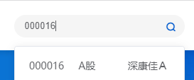

版本：1.0
编订日期：2022-05-03
本数据库收集A股市场中，由上市公司发起（作为买方）并完成的并购交易。原始数据来源于CSMAR数据库，但由于并购交易复杂、并购公告标准化程度低，有大量数据需要手工收集完善。
本数据库的用途包括但不限于：
数据库包含的变量（列）如下表所示。其中，标为 的变量说明需要手工填列。
表1 数据库变量说明 折叠
| 列名称 | 变量说明 |
| 证券代码 | |
| 首次交易日期 | |
| 最新公告日期 | |
| 交易编号 | |
| 标的方 | |
| 无审计报告 | 审计报告未公布、或无财务报表则填1；否则留空 |
| 公告链接 | 并购公告的链接 |
| 收购比例 | 本次收购标的公司股权的比例 |
| 控制 | 通过本次并购控制标的方则填1；否则留空 |
| 跨国并购 | |
| 跨省并购 | |
| 跨市并购 | |
| 横向并购 | |
| 纵向并购 | |
| 混合并购 | |
| 产品 | |
| 许可 | |
| 人力 | |
| 市场 | |
| 资产 | |
| 技术 | |
| 现金支付 | |
| 股票支付 | |
| 可转债支付 | |
| 业绩承诺原文 | |
| 标的账面价值 | |
| 评估基准日 | |
| 买方支出价值 | 公告中买方支出的价值。数据库中已有，需要校对。 |
| 财务数据来源 | 审计报告链接；如无审计报告，填含财务数据的并购公告链接 |
| t期财务数据 | [评估基准日]的财务数据 |
| t-1期财务数据 | [评估基准日]前一年的财务数据。如：2022-04-30的前一年为2021-12-31 |
交易编号的格式为Id+Year+Num。其中，Id为六位数股票代码，Year为四位数年份代码，Num为两位数的序号代码。
例如，对于上市公司（Id:000016）在2017年的第1笔并购，编号为：
000016201701
若并购类型为“跨国、跨省或跨市”，则在对应变量下方填1。
例如，跨省并购必然是跨市并购，但我们只需在跨省的下方填1即可。
若并购发生在本市内，则于“跨市并购”填0，避免检查时误解为漏做。
横向并购：收购竞争者的企业；
纵向并购：收购供应商或客户；
混合并购：既不属于横向、也不属于纵向的并购。
易错点：错误常见于横向并购与混合并购难以区分。横向并购强调的是竞争者之间的并购。有时并购发生在同行之间，但双方不构成直接的竞争关系，则视为混合并购。
例如，生产汽车不同金属零部件的厂家，可能属于同一行业，甚至拥有同样的供应商和工艺。但由于最终的产品不同，所以没有竞争关系，发生在他们之间的并购属于混合并购。
或许之后不需要了，暂空。
并购主要包括三种支付方式，按照比例填列。
例如，一起并购为“发行股份及支付现金购买资产”，其中，现金支付对价1,000万元，股份支付对价9,000万元，则三项变量分别填列：10%、90%和0%。
本数据库使用巨潮资讯网作为原始信息来源。
在网站右上角的搜索栏粘贴或输入上市公司的代码，进入页面。
图1
将[首次公告日期]和[最新公告日期]粘贴进入日期选择器内。由此确定好搜索范围。
图2
A股市场的并购公告大致可以分为两种类型。其一是以发行股份购买资产为代表的报告书式公告，上市公司需要披露并购交易计划报告书，内容十分详尽。另一种是普通式公告，只包含较少的资料。
| 公告内容 | 支付方式 | 审计报告 | 交易规模 | |
| 报告书式公告 | 丰富 | 一般包含股票支付 | 一定公布审计报告 | 无差异 |
| 普通式公告 | 较少 | 不包含股票支付 | 不一定有审计报告 |
我们首先在确定好的公告范围中搜索关键字“报告书”，确定是否为报告书式公告。
图3
如 图3 所示，可以搜索到[报告书]与[报告书摘要]，我们选择报告书作为原始数据的来源。
如果没有报告书，我们采取从后往前（即先看时间早的公告）的方式，来查找并购公告。
这是由于，报告书式的并购过程较长、披露要求较多，因此会披露多个版本的报告书，我们选择时间最晚的版本，信息质量最高。
对于普通的并购，往往只在第一份公告中说明并购的详细信息，后续的进展公告中缺少我们需要的内容。因此我们有限看发布时间最早的公告。如图4所示。
图4
由此，我们就找到了并购的公告，可以以此填写半数变量。另一部分的变量需要找到并购标的的审计报告。没有审计报告的，则并购公告中包含了我们的财务数据。
Tips：如果是普通式的并购，没有审计报告，且公告中没有财务数据，则我们跳过此条不录。同时将[交易编号]一栏填充为 。（仍需进行编号）
由于普通式的并购公告篇幅很短，浏览方便，本节以报告书式公告为例，说明寻找资料的过程。
首先我们打开公告。
图5
在“交易的目的”中，一般会介绍双方的行业和产品，由此可以判断横向、纵向还是混合并购。
在“交易的具体方案”中，包含有并购的价格、支付方式等信息，以及收购比例、是否通过本次并购实现控制（合并报表）。
自此往下，可以翻到业绩承诺的相关信息。也可以使用 ctrl+F 进行搜索。
最后，公告中有对上市公司和标的公司的介绍章节，可以判断双方的地理位置（有时也可通过公司名字判断）。
从审计报告中取得（标的公司的）财务数据较为简单。但是并购活动披露的审计报告规范性不强，多为扫描件，无法复制粘贴。这里提供一个录入财务数据的方法参考。
图6
首先我们打开了一份标的公司的审计报告。本数据库中，我们只要合并报表数据，不要母公司报表数据。同时，我们新建一个excel文档，设置如下：
图7
说明：由于我们的数据库中，t期和t-1期的财务数据是横向填列的（放在一行里）。按照这个方式填财务数据，需要先把报表从上往下（从资产负债表翻到现金流量表），填完t期，再翻回到开头填t-1期，非常麻烦。
所以先在excel中，按照报表原本的样式填好。然后在（图中为第11、12行）中将填好的数据转置为一行，再粘贴入数据库表中。
关于转置函数 transpose 的用法可以自己上网搜索学习。
tips：也可以在此表中集成一个速算不同支付方式比例的功能。
tip2：对于缺失的数据不能填0。设置 if(数据="", "", 数据) ，避免缺失的数据被自动变成0。
同时收购多家企业的，可能的情况是：
(1)收购多家企业ABCD，它们都是同一家企业E的股东。因此并购的实际目的是取得E的股权。
面对这种情况，我们视E为并购的标的，所有变量以此为中心进行录入。包括收购比例、财务数据、地理因素、行业因素等等。
(2)收购多家企业，彼此都是实际的经营单位。
面对这种情况，如果能够分别取得各家企业的收购价格和财务数据，则将此条目拆分成N条。如果不能的，继续实为同一条数据。
如果不能拆分的，在“收购比例”中标记 NAN，后续人工进行处理（尝试计算加权比例）。
原始数据库中出现重复条目：删除此行。
审计报告中只有财务报表附注，没有财务报表：实为没有审计报告，在并购公告中寻找财务数据。
其他情况：随时补充。